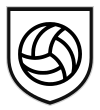

الموسم الثاني · الجولة 10
الترتيب العام
20 مشاركًا · الرصيد بعد الجولة 10
1
 لطفي92
لطفي92
لطفي922أيوب90
أيوب903 أبو أوس89
أبو أوس89
أبو أوس8942العندليب85
العندليب8552أبو عزام85
أبو عزام8562مصطفى عبده85
مصطفى عبده8572أبا عتاب84
أبا عتاب8484أبو تغريد (زيد)84
أبو تغريد (زيد)8494أبو رمزي83
102أبو شيخة81
أبو شيخة8111سعيد79
122أبو يحيى79
أبو يحيى7913علي قوول78
14أبو مناف77
أبو مناف77151ليمان75
161أبو حمد75
171أبو عبيدة71
181موسى (العجوز)71
19محمد عثمان69
20

أبو صالح6229 أكتوبر 2026 · 18 جمادى الأولى 1448 هـ